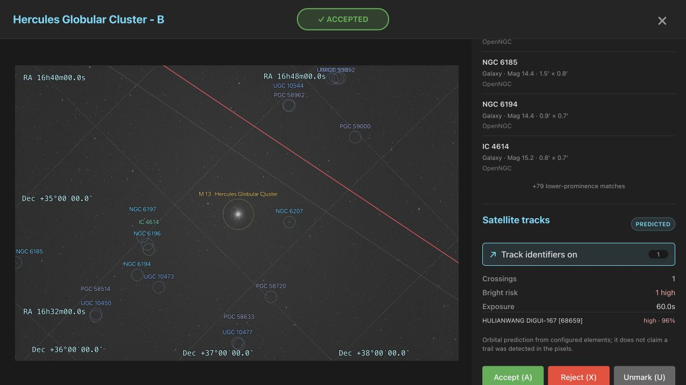
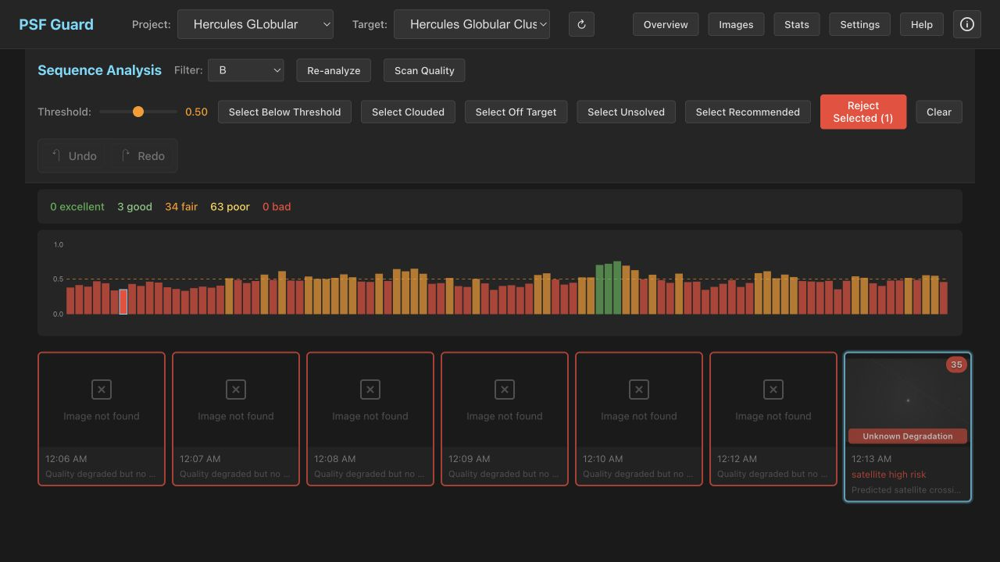

Satellite Tracks
PSF Guard uses Seiza to solve an exposure, then projects cached orbital elements through its exact observing interval and site. The Image Details overlay names every in-frame prediction; the sequence grader surfaces likely bright crossings for review.


Identify a crossing
- Open an image and find Satellite tracks.
- Choose Identify satellite tracks, or press T. PSF Guard solves the pixels first when no valid WCS is cached.
- Toggle Track identifiers to compare the projected path with the image. Red is high risk, yellow possible, and cyan low.
- Select a named result to open its external satellite information page for orbital and launch details.
Timing and observing site
Topocentric propagation requires latitude, longitude, elevation, and the
UTC shutter interval. PSF Guard accepts explicit DATE-BEG /
DATE-END bounds, or derives bounds from exposure duration and
DATE-AVG. If no midpoint exists, it uses
DATE-OBS plus EXPTIME or EXPOSURE.
Site aliases include SITELAT/SITELONG,
LAT-OBS/LONG-OBS, and
OBSGEO-B/OBSGEO-L. Missing time, site, WCS, or
orbital elements makes the analysis abstain instead of calling the frame
clean.
The Hercules example
These screenshots use a real 60-second B-filter exposure of the Hercules Globular Cluster from 2026-05-21. Seiza 0.9 matched 85 stars at 1.73 arcsec RMS. A historical TLE snapshot near the exposure epoch predicts one fully illuminated crossing by HULIANWANG DIGUI-167 [68659]:
- centered shutter interval: 07:13:15.355–07:14:15.355 UTC;
- site: FITS observing-site headers, independently checked;
- clipped path: about 7,672 pixels;
- minimum range: about 1,174 km;
- heuristic risk: 0.96, classified high.
The visible diagonal trail is roughly 800–1,200 full-resolution pixels from the red path. Checking the observing address moved the prediction by only 25–38 pixels because the FITS site was already within about 0.2 km of the independent geocode. The candidate name is therefore not a positive identification of the visible trail. The difference could come from orbital uncertainty for this recently launched object, a different object, or another timing/site input error. See the external NORAD 68659 information page when following up on the candidate.
Risk and grading
The risk is a conservative 0–1 geometry and illumination heuristic using
sunlight fraction, range, elevation, and clipped path length. It is not an
apparent magnitude. A possible risk caps the quality score at 0.75. A high
risk caps it at 0.35 and proposes an [Auto] rejection, which is
still shown for per-image review and explicit confirmation.
Offline and reproducible use
The explicit on-demand action may refresh CelesTrak data. Background
quality scans and screen-fits --regrade-db are cache-only and
never download orbital data. For historical or reproducible analysis,
configure a local OMM JSON or TLE file:
"astrometry": {
"data_dir": "/var/lib/psf-guard/seiza",
"satellite_elements": "historical.tle"
}Per-image results retain the FITS fingerprint, exact WCS, timing and site headers, orbital source, and Seiza dependency versions. Replacing the image, solution, or software invalidates the cached prediction.